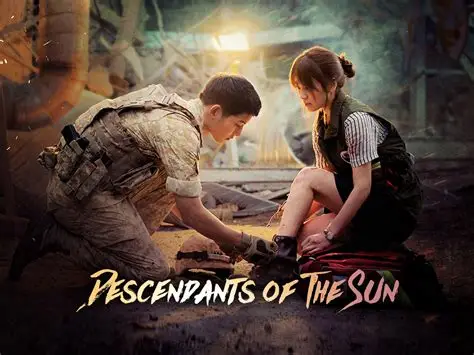

Yi Yul, Crown Prince of Joseon, is a perfectionist who disregards most royal palace nobles. His cold and demanding
demeanor masks deeply rooted loneliness. He comes to pass a law stating that Korean citizens of marriageable age must
wed before the age of 28.
Casts
Doh Kyung Soo
Kim Seon Ho
Nam Ji Hyun

Descendants of the Sun follows the romance between Captain Yoo Si-jin, a South Korean special forces officer, and Dr.
Kang Mo-yeon, a talented surgeon, as they navigate love, duty, and humanitarian missions in a disaster-stricken foreign
land.
Casts
Song Hye Kyo
Song Joong Ki
Jin Goo
Kim Ji Won
In 1998, Na Hee-do (Kim Tae-ri) is a member of the school fencing team at Seonjung Girls' High School, but due to the
IMF crisis, the team is disbanded. To continue pursuing her passion, she transfers to Taeyang High School and later
manages to become a member of the National Fencing Team. Baek Yi-jin's (Nam Joo-hyuk) family had gone from "riches to
rags" and is separated due to the financial crisis. He is forced to take up several part-time jobs and later becomes a
sports reporter.
Casts
Na Hee-do
Baek Yi-jin
Crash Landing on You follows a South Korean heiress who, after a paragliding accident, ends up in North Korea and is
sheltered by a principled army officer. Despite the political divide, their bond deepens as they navigate danger and
secrecy. Praised for its lead chemistry, high production quality, and heartfelt storytelling, it became a
record-breaking hit in Korea, gained global acclaim via Netflix, and is celebrated as one of the most beloved romantic
K-dramas.
Casts
Hyun Bin
Son Ye Jin
Seo Ji Hye